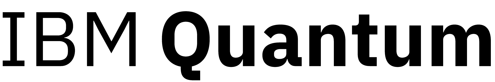

5th International Workshop on
Quantum Compilation
22-23 July 2023
Paris, France
About the workshop
The workshop aims to bring together researchers from quantum computing, electronic design automation, and compiler construction. Open questions that we anticipate this group to tackle include new methods for circuit synthesis, optimization, and rewriting, techniques for verifying the correctness of quantum programs, and new techniques for compiling efficient circuits and protocols regarding fault-tolerant and architecture constraints.
The scope of the workshop includes, but is not limited to, current hot topics in quantum software compilation such as
- Depth- and space-optimizing compilers for quantum circuits
- Quantum and reversible circuit peep-holing and (re)synthesis
- Reversible logic synthesis
- Technology-aware mapping
- Fault-tolerant circuit compilation
- Quantum programming languages
- Intermediate representations for quantum software
- Optimized libraries (e.g., for arithmetic and Hamiltonian simulation)
- Benchmarking of circuits for small and medium scale quantum computers
- Design-space exploration for automatic code generation from classical HDL specification
- Software and tools for all above mentioned topics
- Quantum outreach: coding contests, tutorials, education
Invited Speakers
- Carmen G. Almudéver (Universidad Politécnica de Valencia)
- David Ittah (Xanadu)
Important dates
| 12 June 2023 (anywhere-on-earth) | Submission of abstract |
| 19 June 2023 | Notification of decisions |
| 22 and 23 July 2023 | Workshop |
Instructions for authors
Submission is open
The main purpose of the workshop is to exchange recent ideas and research in the area of quantum compilation. The workshop has no formal proceedings. Authors are invited to submit an abstract or a paper, with no restrictions on the format. Submission of tool and case-study papers are highly encouraged. In case of a positive evaluation, submissions are accepted either as oral or poster presentation to be part of the workshop program. All abstracts and papers are distributed only among the participants.
Accepted submissions should be presented in person in Paris — please note the workshop dates! Submissions must point out who will present the contribution if it is selected.
Submission is via EasyChair. Please submit your contribution here https://easychair.org/conferences/?conf=iwqc23
Registration
Registration is now open and FREE. Please complete this form to register. Please note that the workshop is in person only.
Local Information
The workshop will take place at the Centre Culturel Irlandais, 5, rue des Irlandais, 75005 Paris. Here is a map.
Organisers
Programme Committee
- Ross Duncan, Quantinuum, ross.duncan@quantinuum.com
- Thomas Häner, Amazon Web Services, thaener@amazon.com
- Ali Javadi-Abhari, IBM Quantum, ali.javadi@ibm.com
- Aleks Kissinger, University of Oxford, Aleks.kissinger@cs.ox.ac.uk
- Neil J. Ross, Dalhousie University, neil.jr.ross@gmail.com
- Mathias Soeken, Microsoft and EPFL, mathias.soeken@epfl.ch
- Benoit Valiron, Université Paris Saclay, benoit.valiron@universite-paris-saclay.fr
The local organiser is Benoit Valiron.
Sponsors
Previous Editions
- 2020 4th International Workshop on Quantum Compilation, Fully Online, 23-24 September 2020
- 2019 3rd International Workshop on Quantum Compilation Westminster, CO, USA
- 2018 2nd International Workshop on Quantum Compilation San Diego, CA, USA
- 2017 First Workshop on Design Automation for Quantum Computing Irvine, CA, USA